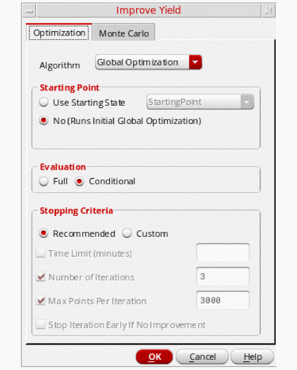
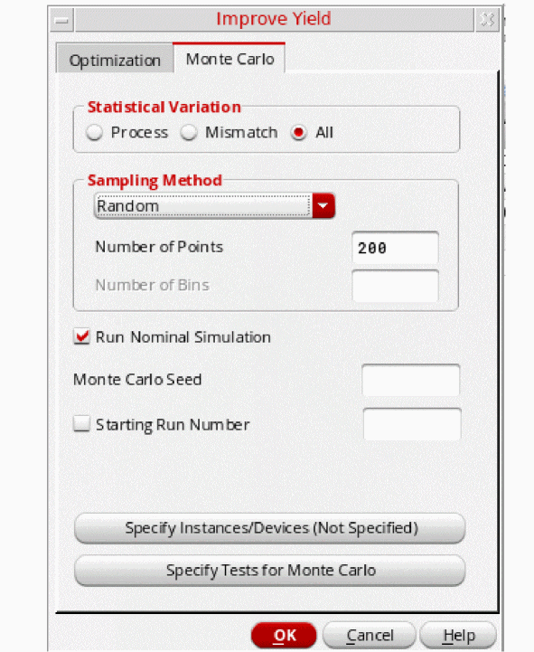

3
Improving Yield for a Design
Virtuoso Variation Option provides the Improve Yield run mode that you can use to return a design point that meets all corners and has the highest possible yield.
This chapter describes this run mode in detail.
The Improve Yield Run Mode
The Improve Yield run mode runs iterations of sizing and Monte Carlo analysis to arrive at a solution. When you start Improve Yield, Virtuoso Variation Option first generates the statistical corners, then, as the run progresses, evaluates points on a subset of those corners. Promising points are then evaluated on a larger set of corners. Eventually the tool arrives at the best point—one that has been evaluated at all statistical corners and has the highest possible yield.
Also available are a number of stopping criteria, including time and points limits. Once the tool hits any of the specified options, it will end the improvement process.
Your design must include devices or device models for which you have specified statistically varying parameter values. You must have one or more specs defined and enabled. You must specify either global (process) or mismatch (per-instance) variations or both. You can also specify correlation information. After simulating, you can
- From the Select a Run Mode drop-down list on the Run toolbar, choose Improve Yield.
-
Click to specify improve yield options.
The Improve Yield options form appears.
 - On the Optimization tab, select the optimization algorithm from the Algorithm drop-down list.
-
In the Starting Point panel, select one of the following options to specify a starting point for the simulation run:
-
Use Starting State—Select this option if you have created a setup state and want to use that as the starting point for the run. To use the setup state as the starting point for the optimization, select a setup state that defines a set of fixed values for every global variable or parameter that defines a range of values in the active setup.
You must have a setup state available to use this option. - No (Runs Initial Global Optimization)—Select this option if you do not have a reference point, or do not want to use the reference point as the starting point for sizing. When this option is selected, the tool performs an initial global optimization on the nominal corner and uses its best point as the starting point for the run. If you select No (Runs Initial Global Optimization), ensure that:
You can also set these run mode options using SKILL and can view the data.sdb file inside the maestro view to find the names of the run options. The options are set when you open the maestro view. For exmaple, by default the Algorithm is set to Global Optimization and if you want to change the algorithm to BFGS, you can follow the below steps:-
Open the
maestroview. The default value for Algorithm is displayed in the SKILL file. - In the SKILL file, change the algorithm to BFGS.
- Save the maestro cellview.
- Open the maestro view again. The BFGS algorithm is set.
You can either set the default run options one time (at the time of ADE Assembler launch) or force the run options to not allow you to change them during the session. Now we connect to two triggers.
postInstall to set the default options when the maestro view is opened.
runOptionsUpdated to reset the run options in case
you want to force some options and make the user unable to change them.(axlSessionConnect session_name "postInstall"
'CCRaxlLaunchADEXL_setDefaultIYrunOptions)
(axlSessionConnect session_name "runOptionsUpdated"
'CCRaxlRunOptionsUpdated_forceIYrunOptions)
The Improve Yield algorithm default is set once on ADE Assembler launch. You can change the algorithm during the session. It will be reset to the default the next time the maestro view is opened. If you uncomment the axlSessionConnect line for the runOptionsUpdated, the new file will have the same behavior as before by setting the default options only at the time of ADE Assembler launch. -
Use Starting State—Select this option if you have created a setup state and want to use that as the starting point for the run. To use the setup state as the starting point for the optimization, select a setup state that defines a set of fixed values for every global variable or parameter that defines a range of values in the active setup.
-
Select an evaluation type by selecting one of the following radio buttons under Evaluation:
For more information on conditional evaluation, see Understanding Conditional Evaluation. -
Select the Recommended check box under Stopping Criteria to use the recommended options. The recommended options are:
If you want to modify these defaults, select the Custom check box, then one or more of the following stopping criteria:- To set a time limit for the run, select the Time Limit (minutes) check box and enter a value in hours.
- To specify the number of sizing/Monte Carlo iterations, select the No. of Iterations check box and enter the number in the field.
- If you want to specify the maximum number of points processed per iteration, select the Max Points per Iteration check box and enter the number of points in the field.
-
If you want to stop the process early if the sizing results in no improvement, select the Stop Iteration Early if No Improvement check box. This option is applied to each optimization iteration. This stopping criteria is similar to the No Improvement with Points stopping criteria for the global or local optimization run modes for which the user also specifies the number of points. In the case of iterative run modes, the number of points is calculated as
Max Points per Iteration / 3.
-
Select the Monte Carlo tab to specify options for Monte Carlo.
 -
When you run Improve Yield, you have a choice of varying the process statistical variables, mismatch statistical variables, or both. If you run only one type of statistical variable, the other variables are set to fixed values.
In the Method group box, select one of the following statistical variations:
You must define your models so that they respond to the statistical variations you choose. You must specify the file containing your models on the Model Library Setup form. For a Spectre circuit simulator example of how to define your models, see “Specifying Parameter Distributions Using Statistics Blocks” in the Virtuoso Spectre Circuit Simulator User Guide. - In the Number of Points field, type the number of Monte Carlo points you want to simulate.
- In the Sampling Method group box, select the statistical sampling method to be used—Random, Latin Hypercube, or Low-Descrepancy Sequence.
-
If the selected sampling method is Latin Hypercube, specify the number of bins (subdivisions) for the Latin Hypercube method in the Number of Bins field.
Note the following:-
If a number is specified, the number of bins will be the specified number, or Number of Points + Starting Run Number -
1, whichever is greater. For example, if the specified number of bins is90, the number of points specified in the Number of Points field is100and the starting run number specified in the Starting Run Number field is6, the value105(100+6-1) is used. -
If no number is specified, a default value of Number of Points + Starting Run Number -
1is used. For example, if the number of points specified in the Number of Points field is100and the starting run number specified in the Starting Run Number field is6, the default value of105(100+6-1) is used.
-
If a number is specified, the number of bins will be the specified number, or Number of Points + Starting Run Number -
-
(Optional) If you want to specify a different seed for the Monte Carlo analysis, select the Monte Carlo Seed check box and enter the seed number.
By always specifying the same seed, you can reproduce a previous experiment. If you do not specify a seed, the value12345is used. -
(Optional) If you want to specify a starting run number, select the Starting Run Number check box and enter the starting run number.
The starting run number specifies the run that Monte Carlo begins with. By specifying this number, you can reproduce a particular run or sequence of runs from a previous experiment (for example, to examine an earlier case in more detail). - By default, mismatch variations are applied to all subcircuit instances in the design. Click the Specify Instances/Devices button to specify the sensitive instances and devices you want to either include or exclude for applying mismatch variations. For more information, see the Including or Excluding Instances and Devices for Applying Mismatch Variations section in the Virtuoso ADE Assembler User Guide.
-
Click Specify Tests for Monte Carlo and select the check box next to the test name for which you want to run Monte Carlo.The N-Sigma tab is not available on the Improve Yield options form now. You can run High Yield Estimation and create statistical corners to optimize your design and to achieve a yield of less than the desired sigma value for the selected specifications. For more details, refer to Creating Statistical Corners From a Worst Case Distance Analysis.
-
In the Run workspace, click the Run simulation icon to improve the yield.
The tool begins synthesizing with Monte Carlo analysis.
When the Improve Yield run is finished, the Data View lists the Improve Yield check point. Expanding this check point displays the different runs that make up a full Improve Yield run, including iterations of Optimization and Monte Carlo. You can view the results of any of these runs by right-clicking and choosing View Results.
Several factors are considered in generating statistical corners, which includes overall yield estimate, individual yield of each specification, and sigma to target value of each specification. Statistical corners are created for specs that have low yield as well as for specs that have yield estimate=100%, but low sigma to target value. When the overall yield is high, statistical corners are created at the worst sample. When the yield is low, the Improve Yield method is less effective in creating statistical corners.
Return to top